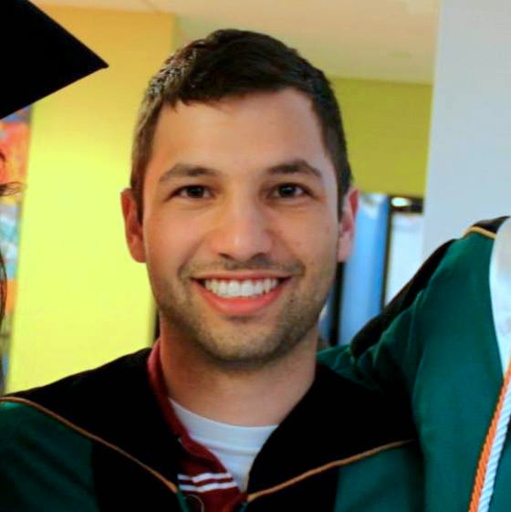

Daniel Gordon

About Me
I am a graduate student at the University of Washington, advised by Dieter Fox and Ali Farhadi. Previously, I graduated from Washington University in St. Louis, where I worked as an undergraduate researcher with Robert Pless.
Research
I am currently exploring using convolutional neural networks for object detection and pose estimation in video data. I plan on developing robust algorithms for use in activity recognition systems, with the eventual goal of fully tracking laboratory procedures to reduce errors in experiments and increase reproducibility.
Publications
- West, Ruth, Abby Halley, Jarlath O'Neil-Dunne, Daniel Gordon, and Robert Pless. "Collaborative imaging of urban forest dynamics: augmenting re-photography to visualize changes over time." In IS&T/SPIE Electronic Imaging, pp. 86490L-86490L. International Society for Optics and Photonics, 2013. PDF
- West, Ruth, Abby Halley, Daniel Gordon, Jarlath O'Neil-Dunne, and Robert Pless. "Collaborative rephotography." In ACM SIGGRAPH 2013 Studio Talks, p. 20. ACM, 2013 PDF
Résumé
Contact